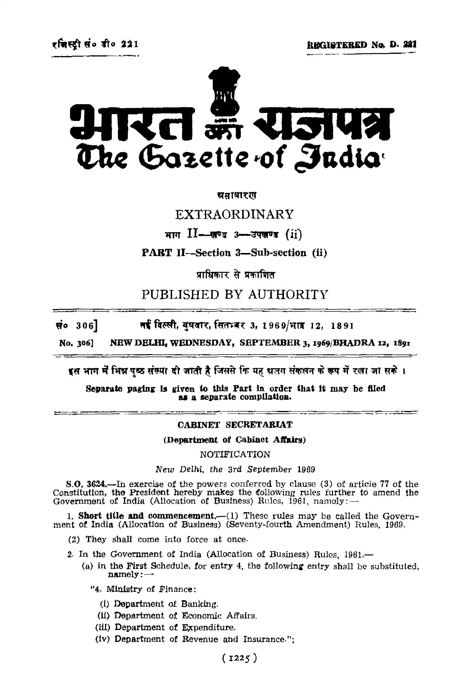
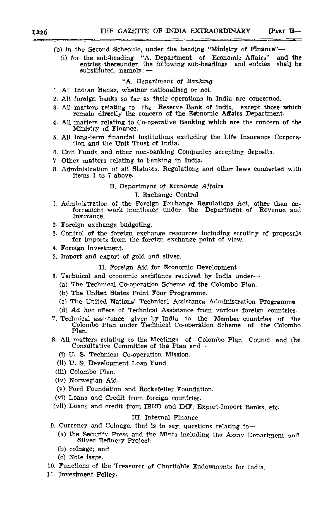
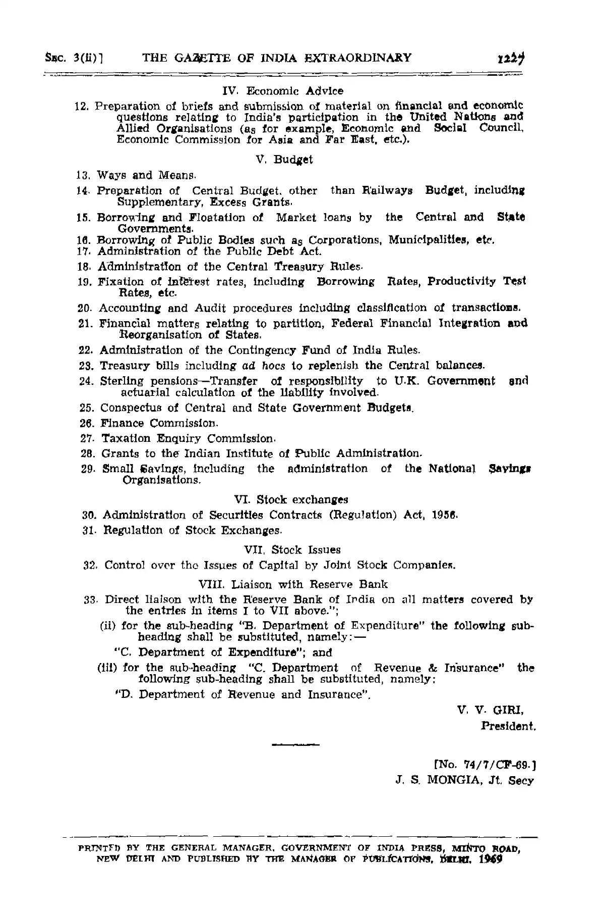

Amendment #74 (S.O. 3624, 1969)
4 changes: 1 to the First Schedule, 3 to the Second Schedule. 4 applied
The order, page by page
Page 1 of 4

1Schedule 1 › entry 4
- 4. Ministry of Finance:
- i. Department of Banking.
- ii. Department of Economic Affairs.
- iii. Department of Expenditure.
- iv. Department of Revenue and Insurance.
applied at schedule 1 › ministry 4 in the Rules after #74
read hindi missing
Page 2 of 4

2Schedule 2 › Ministry of Finance › Department of Economic Affairs
- A. Department of Banking
- 1. All Indian Banks, whether nationalised or not.
- 2. All foreign banks so far as their operations in India are concerned.
- 3. All matters relating to the Reserve Bank of India, except those which remain directly the concern of the Economic Affairs Department.
- 4. All matters relating to Co-operative Banking which are the concern of the Ministry of Finance.
- 5. All long-term financial institutions excluding the Life Insurance Corporation and the Unit Trust of India.
and 56 more
- 6. Chit Funds and other non-banking Companies accepting deposits
- 7. Other matters relating to banking in India.
- 8. Administration of all Statutes, Regulations and other laws connected with items 1 to 7 above.
- B. Department of Economic Affairs
- I. Exchange Control
- 1. Administration of the Foreign Exchange Regulations Act, other than enforcement work mentioned under the Department of Revenue and Insurance.
- 2. Foreign exchange budgeting.
- 3. Control of the foreign exchange resources including scrutiny of proposals for imports from the foreign exchange point of view
- 4. Foreign investment.
- 5. Import and export of gold and silver.
- II. Foreign Ald for Economic Development
- 6. Technical and economic assistance received by India under—
- a. The Technical Co-operation Scheme of the Colombo Plan.
- b. The United States Point Four Programme.
- c. The United Nations' Technical Assistance Administration Programme.
- d. Ad hoc offers of Technical Assistance from various foreign countries.
- 7. Technical assistance given by India to the Member countries of the Colombo Plan under Technical Co-operation Scheme of the Colombo Plan.
- 8. All matters relating to the Meetings of Colombo Plan Council and the Consultative Committee of the Plan and- (1) U. S. Technical Co-operation Mission (11) U. S. Development Loan Fund.
- ii. Colombo Plan. (Iv) Norweglan Aid.
- v. Ford Foundation and Rockefeller Foundation.
- vi. Loans and Credit from foreign countries.
- vi. Loans and credit from IBRD and IMF, Export-Import Banks, etc.
- III. Internal Finance
- 9. Currency and Colnage, that is to say, questions relating to-
- a. the Security Press and the Mints Including the Assay Department and Silver Refinery Project:
- b. coinage; and
- c. Note issue.
- 10. Functions of the Treasurer of Charitable Endowments for India.
- 11. Investment Policy. SEC. 3(H)]
- IV. Economic Advice
- 12. Preparation of briefs and submission of material on financial and economic questions relating to India's participation in the United Nations and Allied Organisations (as for example, Economic and Social Council Economic Commission for Asia and Far East, etc.).
- V. Budget
- 13. Ways and Means.
- 14. Preparation of Central Budget, other than Railways Budget, including Supplementary, Excess Grants.
- 15. Borrowing and Floatation of Market loans by the Central and State Governments.
- 16. Borrowing of Public Bodies such as Corporations, Municipalities, etc.
- 17. Administration of the Public Debt Act.
- 18. Administration of the Central Treasury Rules.
- 19. Fixation of Interest rates, including Borrowing Rates, Productivity Test Rates, etc.
- 20. Accounting and Audit procedures including classification of transactions.
- 21. Financial matters relating to partition, Federal Financial Integration and Reorganisation of States.
- 22. Administration of the Contingency Fund of India Rules.
- 23. Treasury bills including ad hocs to replenish the Central balances.
- 24. Sterling pensions-Transfer of responsibility to U.K. Government and actuarial calculation of the liability involved.
- 25. Conspectus of Central and State Government Budgets
- 26. Finance Commission.
- 27. Taxation Enquiry Commission.
- 28. Grants to the Indian Institute of Public Administration.
- 29. Small Savings, including the administration of the National Sayings Organisations.
- VI. Stock exchanges
- 30. Administration of Securities Contracts (Regulation) Act, 1956.
- 31. Regulation of Stock Exchanges.
- VII. Stock Issues
- 32. Control over the Issues of Capital by Joint Stock Companies.
- VIII. Liaison with Reserve Bank
- 33. Direct liaison with the Reserve Bank of India on all matters covered by the entries in items I to VII above.
applied at schedule 2 › ministry MINISTRY OF FINANCE › department A in the Rules after #74
read hindi missing, read page break
Page 3 of 4

34Schedule 2 › Ministry of Finance › Department of Expenditure
- C. Department of Expenditure
applied at schedule 2 › ministry MINISTRY OF FINANCE › department C in the Rules after #74
read hindi missing
Schedule 2 › Ministry of Finance › Department of Revenue & Insurance
- D. Department of Revenue and Insurance
applied at schedule 2 › ministry MINISTRY OF FINANCE › department D in the Rules after #74
read hindi missing
Page 4 of 4
How this document was read
Edits to the reading
| Date | By | Edit | Before → after |
|---|---|---|---|
| 12 November 2026 | claude | word corrected |
From the Government of India (Allocation of Business) Rules, 1961 and their amendments, as published by the Cabinet Secretariat (cabsec.gov.in), read by orgpedia. The readings of the older scanned gazettes have known gaps.